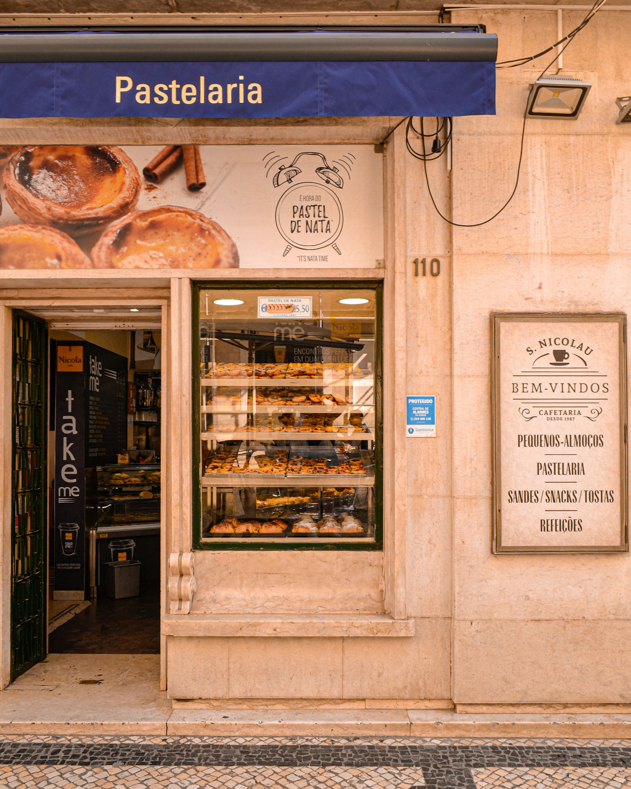
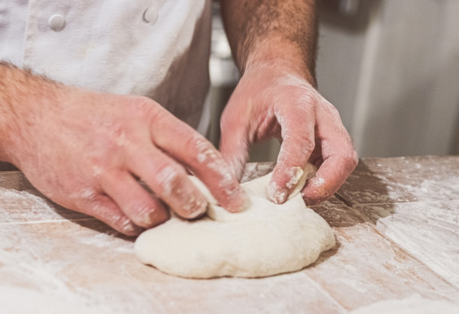
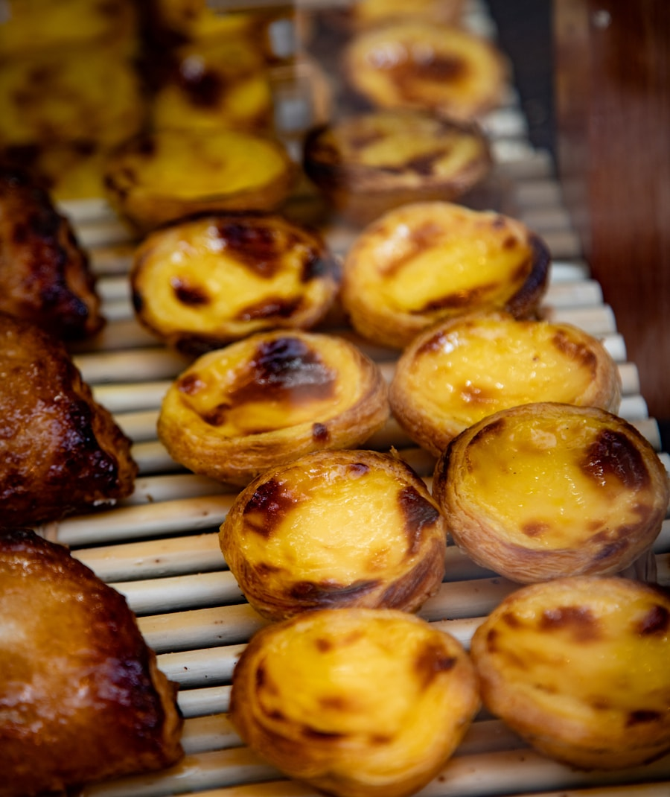
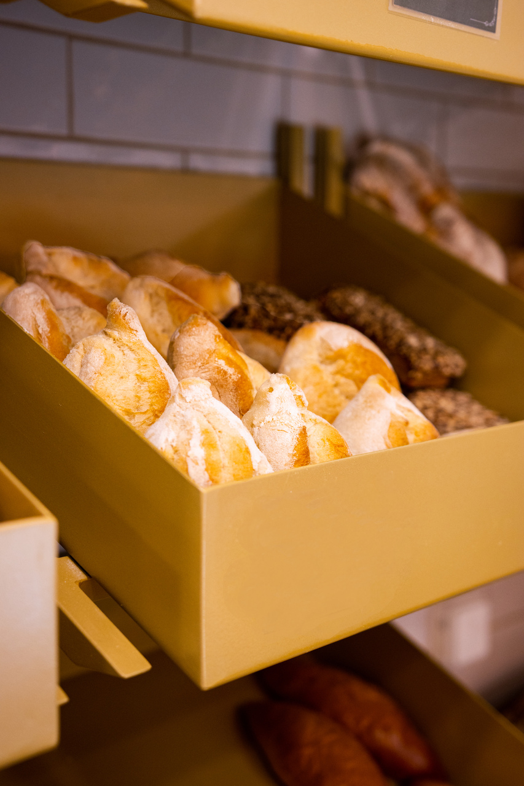
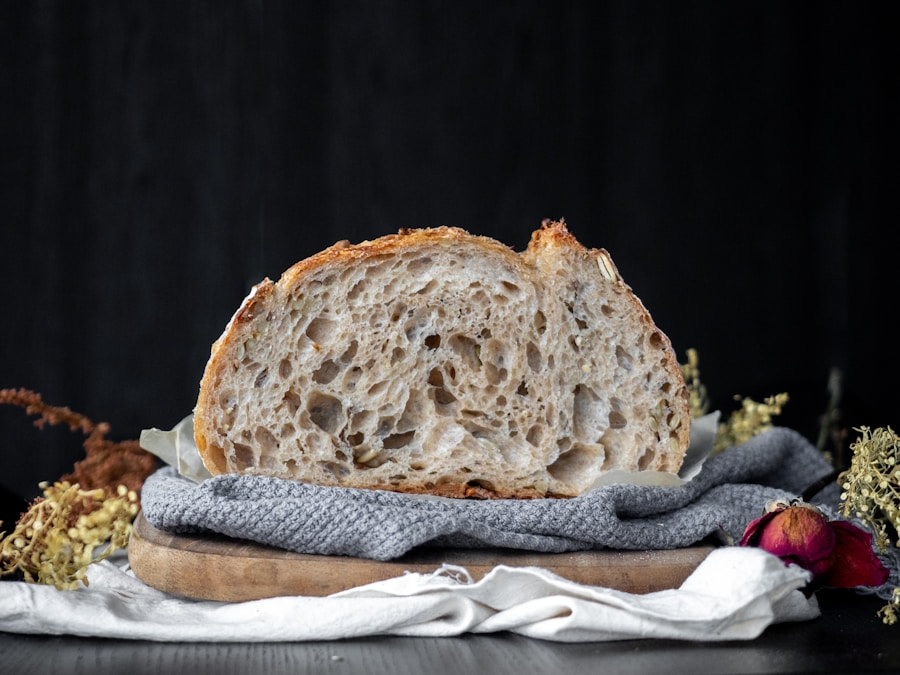
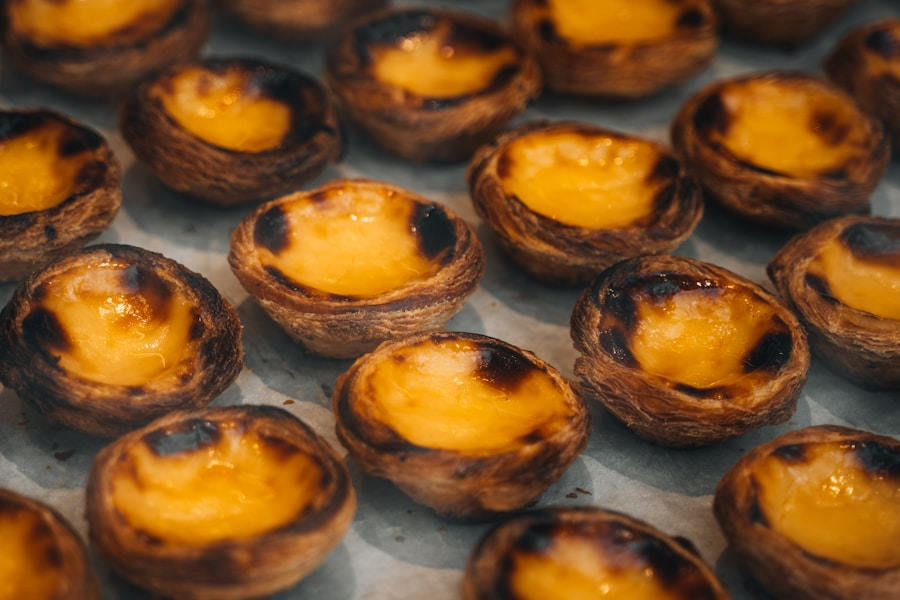
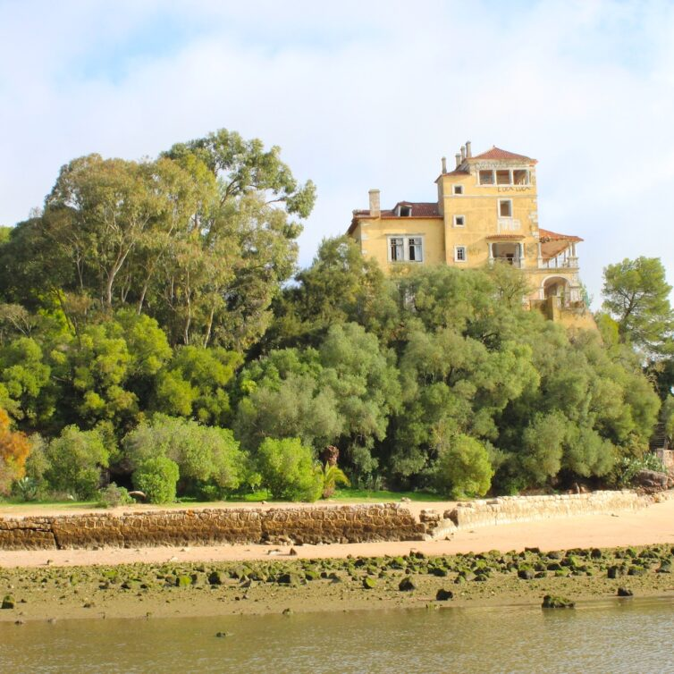
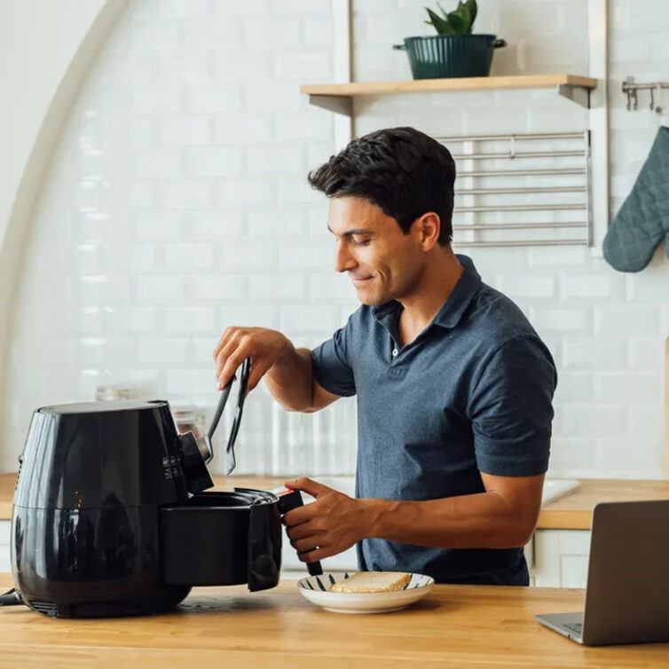

Pão fresco todas as manhãs, doçaria tradicional, receitas que não se perdem. É o que fazemos todos os dias, na Praça do Brasil.

Susana Jones e Paulo Gouveia abriram a Tradições com uma missão simples: não deixar morrer as receitas verdadeiras. Tudo é feito à mão, sem atalhos, com os ingredientes e os métodos de sempre.
O pão sai quente todas as manhãs e também abastece o restaurante Sem Horas. A doçaria segue as estações — bolo-rei no Natal, sonhos, azevias, tarte de requeijão. O que fazem, fazem bem.
Tudo de fabrico próprio. Sem conservantes, sem atalhos.
Pão de sementes, broa de milho, pão de centeio e massa mãe. Saem quentes todas as manhãs.
Doçaria tradicional portuguesa, feita com receitas de família e ingredientes de qualidade.
Almoço caseiro com prato do dia e sopa. Take-away disponível, ideal para levar para o trabalho.
As receitas que marcam o calendário — feitas na época certa, com o cuidado de sempre.
* Produtos sazonais disponíveis na época. Encomendas especiais com antecedência — ligue para 265 415 487.






"Pão acabado de sair do forno às 7h30 — não há melhor forma de começar o dia. Os pastéis de nata são os melhores de Setúbal."
"Tudo artesanal, sente-se a diferença. O brioche é extraordinário e a equipa é sempre muito simpática. Voltamos todas as semanas."
"É o que uma boa padaria deve ser: produto honesto, feito com cuidado, a um preço justo. O pão de massa mãe é incrível."
Praça do Brasil, 12
2900-285 Setúbal
Segunda a Sábado
7h30 – 19h30
Encerra ao Domingo